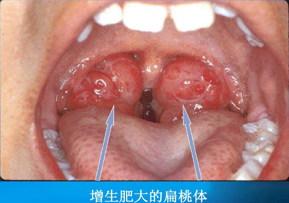

(图片来自网络)
阻塞性睡眠呼吸暂停低通气综合征（OSA）往往与患者体重成正比，OSA患者的主要体貌特征是脖子粗短、肥胖。
(图片来自网络)
但是作为呼吸道起始部位的舌头、鼻咽部、下颌等部位如果出现了增生肥大或是狭窄，也可以导致呼吸道的阻塞。OSA并不是肥胖者的专利，扁桃体增大的小朋友，短下颌的女士也会出现打鼾。
因此部分有打鼾、头疼、嗜睡等症状患者，但是因体型并不肥胖常常被忽视了口腔狭窄的问题，而导致呼吸暂停的漏诊，这类患者以女性最为多见。
(图片来自网络)
Mallampati分级是个简单的评估口腔的方法，用力张口伸舌至最大限度 （不发音），根据所能看到的咽部结构，分4个等级。Mallampati分级越高表示口腔越狭窄，特别是IV级属于困难气道。
如果出现了明显的间断性的打鼾、夜间睡眠过程中反复憋醒、晨起头痛、白天嗜睡等症状，您可以让身边的人帮你评估一下口腔是否有狭窄，如果问题及时就诊。